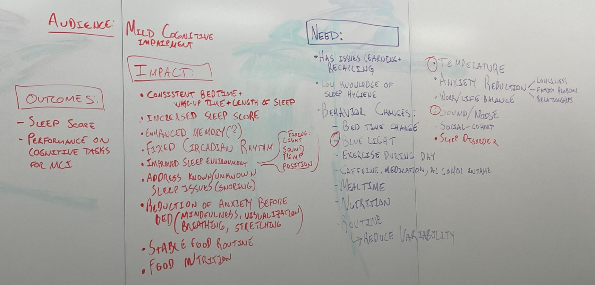

Group Members:
Sam Shields, Yuxiao Wang, Kendra Shu, Jessica Wei, Keyu Lai, Raghu Mina
Game
Gamified Sleep Hygiene and Data Collection to Detect and Combat Mild Cognitive
Impairment
Target Audience
Sleep Hygiene team, some thoughts from Carolyn about designing for your target
population:
Older adults (and especially people with MCI) like bigger screen, larger font size, and
buttons that make intuitive sense. It’s hard for them to learn new ways to navigate
technology – which is why transitioning them from Mac to PC or vice versa in later life is
usually a disaster.
Problem 2:
A gamified experience/game is needed to support healthy sleep behavior change and slow
onset of MCI/Alzheimer’s Disease.
References:
Root Cause Analysis

ACTIVITIES:
1. Calming sensory experience - (dream on)
a. Sound - boring stories
b. Sound - ASMR
c. Smell - Tokens w/ essential oils
d. Meditation?
e. Breathing Exercises
2. Diet
a. Food timing
b. Good nutrition
c. No Caffeine
3. Sleep Environment
a.
b. Eliminate noise/create white noise
c. Turn off lights/wear eye mask
d. Have an appropriate blanket/temperature/humidity
4. Exercise
a. Not right before bed but during the day
5. Routine
a. Same time to bed
b. Same time to wake up
6. Sleep disorders
a. Know/learn about your disorders
INPUTS:
1. Sleep data/scoring
a. Bedtime
b. Awake Time
c. Sleep/Wake cycle
d. Deep >20% REM>20%
2. User to interact with smart watch
3. User to interact with game interface (?)
Random Collection of Ideas
Put ideas here!
Sleepy Games ! Cozy Games and Idle Games
1. Sleep is a garden
a. Track habits, doing them grows your garden
b. Gardener character gives you advice on how plants (good habits) grow
2. Routine Growth
a. One thing at a time methodology - focus on one habit for 7 days, then build on it
b. E.G. Make bed in morning
3. Bedtime Chat
a. Bot that asks you reflective/meditative questions and plays meditations/good
stories
i. E.G. what are you grateful for, what happened today
ii. Done through talking
iii. Bot doesn’t need to understand
4. E-INK Town Manager/Decorator
a. Lo-Fi/cutesy pixel look with no backlight or bluelight
b. Players get points by listening to meditations at the right time of day
c. Points used to populate a little town over time
5. Sweet Dreams
a. Focus on creating environment for dreams before going to bed and journaling on
wake-up
b. Create a fantasy/prompts to help the person “prepare” for a given dream
c. Write about their dreams when they wake up
6. Tamagotchi Sleep pet
a. Create a cute pet that the person must train how to sleep well
b. Must give the pet the right food and exercise throughout the day to get it to sleep
and feel good
c. Tell it stories before bed to fall asleep
d. Say good night to it regularly
e. Generative to make it personalized
f. Update the pet’s environment to make sure it sleeps well (e.g. open windows in
morning. Close at night)
g. Little guy comes with you in your watch during the day, but sleeps in a
phone/computer at night (you must tell them to go to bed/go to their room)
h. Pet’s mood is about their sleep
7. ARG Adventure
a. Encourage a morning walk ritual to get bright light and exercise early in the day
8. Bed Thought Box
a. Before bed, encourage people to type in/write anxieties/thoughts/planning down,
have the app visually disappear it
9. Review data
a. If you have a bad night sleep, figure out what you did/didn’t do to fix it through
questionaire
(Jess)
● Adaptive mechanics
○ If watch can detect that someone is having trouble falling asleep, faintly play
soothing sounds/white noise
● Watch becomes a virtual companion, asking the user to do certain activities to foster its
growth, when in reality, the companion’s needs actually reflect the users’ physical/mental
needs
○ I.e. needs some excitement! Needs player to go out on a run to increase their heart
rate for 30 minutes within the next 2 hours
○ I.e. feeling oddly hyper today… needs player to skip the daily caffeine run
○ I.e. feeling restless before bed → needs player to take some time to do some
breathing exercises before bed
○ I.e. feeling hungry in the morning → needs player to wake up on time to feed their
companion and also themselves
○ How do we make sure that the players actually do 1/2 of these things? No clue :<
■ Honor system maybe?
● No thoughts, brain empty
● The sleep gacha game wait no thats stressful
○ Sleep score unlock different creatures
○ Better the sleep score more cooler creatures
○ Each creature represents a good sleep hygiene habit
○ Interact w/ each creature and learn from them
○ Ex: pokemon smile
■ Gives reminders and take pictures
○ Write notes and take pictures of what you did
○ And when you interact with the environment and animals
○
● Some game using breathing patterns and body movements using echolocation
● Sleepy game design
○ Go to sleep and check on your fairy farm in the morning
● Sleep score generates a music score
○ Music or sound ambience custom made to help you sleep
○ We can incorporate some memory exercise or reminders somehow to help with the
mild cognitive impairment
○ Or it could generate an image or art
○ Ex: a beautiful portrait of someone doing yoga
○ To give them the urge to go exercise and breathe
● Jamais vu is the experience of being unfamiliar with a person or situation that is very
familiar. Opposite of Deja Vu. not a game idea but maybe a cool title suggestion
● Feedback game based on personal input and input data
○ Survey
○ Gives customized feedback
○ Why am i thinking about baymax from big hero 6
● Sensory game
○ Bop it but with a soft fluffy pillow or teddy bear
○ Wait a min this is just eddie’s CPR dog game
○ BUT relaxing WE MAKE IT RELAXING
○ With soothing sounds
○ And strong cues of relaxation
Goal is to improve sleep hygiene and cognitive impairment
Sleep simulation:
1. Player input the basic information(age, gender, the necessary working time)
2. According to the basic info, make a plan for a specific user(a get up time, go to bed time,
“you have to eat an apple now!”, “drink time!”,“Run!Piggy, run!” , as a daily missions list).
3. Choose a object to raise(pet, plan, or a deserted planet)
4. Good sleep data can bring benefits to the object.
5. Social network: user can make friends with the other users to supervise each other(make a
bet for go to bed on time, or who is sleeping earlier )
6. Reward Mechanism: Users who activate the sleep mode on time, can get a random white
noise(or any other things, a little story) from the other users; Users who failed the aim must
upload a sound.
Sleep Score:
1. Like some quiz games
2. Players answer some sleeping healthy questions and get some score
3. There are several theme levels, each theme has 5 small levels.
4. Players should get enough score to get to the next level.
5. To make this game more interesting, we can add some fun animation to the question.
Let me sleep ()
1. Basic interface will be like health apps.
2. Will consist of awards, achivements, can compare your data with other players, ranking
system.
3. Task will be: maintain sleep routine, sleep quality will be checked by existing health apps.
4. Have to disconnect device from wifi or any other internet connection.
5. Can play with other players, challenge them for sleep score, sleep time
6. Have stages like 1. Noob sleeper, Good sleeper, Legendary sleeper etc.
7. Can play sound track which are known for helping children and adults sleep.
8. You can add your physician in the game.
9. Share your sleep related queries with experts, FaQ’s.
10. Primarily it will be a multiplayer game so other can help each other, track each other
11. Can read you boring audio books.
12. Get your routine checked by experts and follow them, if not able to follow them loose
points, achievements.
13. Player can play a short sleep simulation game, so that he can keep remembering his goals.
Curating and Combining Ideas
1. Sleepy Pets/Kids/Farms/Gardens
a. Take care of thing
b. Get thing ready for bed
i. Close curtains
ii. Turn off noise
c. Get thing ready in the morning
d. Thing comes with you in your watch during the day, and you must put it to bed at
night
e. Activities at night also put your phone away, turn on white noise/etc.
f. Can give your little thing different rewards if your sleep
g. Little thing has moods based on your sleep score
2. Visualize score in a cute way that matches thing
3. Phone Activity to put away
a. Put on silent, turn on blue light filter, etc.
4. Bed Thought Box
a. Talk to your watch, it listens, then fades away or gets destroyed
5. Progression based on Sleep Score
6. Sounds before bed
7. Breathing/Other BioFeedback
8. Idle Game
a. Sleep to gain energy
Questtions
1. What kind of data do we get?
2. Would people prefer pets/kids/gardens/etc
Sleep Advice/Studies
Some sleep advises:
1, establish a regular biological clock
Try to fall asleep at the same time and wake up at the same time every day, including weekends and
long vacations.
2, create an ideal sleeping environment
Create a dark and quiet environment, close the curtains, put on the eye mask, and the temperature
and humidity in the room should be appropriate.
3, do not bring the phone to bed
Make it a good habit to do just one thing in bed – sleep (and hehehehe).
4. Pay attention to diet before going to bed
Try not to eat 3 hours before going to bed, and don't drink coffee or alcoholic drinks near bedtime.
5. Do more exercise
Data Analysis:
'In bed start': 'first',
'In bed Finish': 'last',
'Minutes in bed': 'sum',
'Minutes asleep': 'sum',
'Time to fall sleep': 'sum'
Heart beat ratio during sleeping
Time of whole sleeping
Core Game Loop Description
The core of Dreamy World revolves around taking care of Dreamy while doing tasks that
encourage their sleep hygiene and health.
Dreamy is extremely sensitive to sleep - it dramatically affects his mood, makes him forgetful,
and more. Your goal is to arrange Dreamy’s world and routines so that he sleep well. Dreamy
will show the user small activities that they can do on waking and on sleep to improve their own
quality of dreaming.
Bioinformatics sent from the smart watch help inform what tasks Dreamy focuses on and
feedback given back to the player.
Each day, the player will take Dreamy with them, waking them up, transporting them on their
watch, and putting them back to bed. On waking up, Dreamy will have a mood corresponding to
the user’s sleep score, and has several tasks they can do. The player can always force Dreamy
out the door immediately, but this will make Dreamy frustrated during the day. The player can do
things like open curtains (get natural light), drink water (start metabolism and rehydrate after
rest), and the like.
If Dreamy is angry after leaving the room, the player may get feedback from Dreamy indicating
missed tasks in the morning - such as a thirsty symbol or a light thought cloud.
Dreamy will mimic (and measure) user activity through the day - walks, metabolism changes,
and so on. This data will be used to understand impacts to sleep scores and provide better
recommendations.
At night, the user will check Dreamy back into its room. At this point, the user can tell Dreamy to
go to bed immediately (as before) or do things to improve their sleep quality. Turning off lights,
setting an alarm, putting out a glass of water are all things that improve Dreamy’s sleep. What’s
more, where possible, these activities are mapped to the device: for example, to put Dreamy’s
phone away, the user must plug their phone into their charger to note it is being put away.
Playtest Notes 3/2/22
● Great start, for physical and digital for a week
● Routine might be an issue
● Might be better to have more Scaffolding
● Have Dreamy do it alongside you rather than be open ended
○ Leaving it open might not be enough
● Guide them through that morning routine + tie it to the real world
○ Ex: Dreamy goes to brush their teeth and you have to brush your teeth in order to
complete that task
● Might be better to have a checklist and an order to complete the tasks
● The character is cute and it feels casual enough and has minimal feedback and touch
which is good because we can’t have too much stuff to overwhelm the players
● Very good for our target audience
● Conceptualize both the NFCs tag and the just the phone
○ See if you want to make it accessible to everyone
○ Not everyone can have access to the stickers
● Think about how we want to prompt users and remind them how to use it
● How can the app tell if they are doing that task at the moment?
○ Force timer?
○ Or running animation
● Tell Dreamy to brush teeth and he keeps doing it
○ Looking at him remind you to do it
○ He keep going until you stop him
● Add more sleep hygiene activities during the day
● The feedback stuff about 30 min walk is great
● We just have to flesh it out more and flesh out that screen and what we want it to look
like
● For the whole list of good sleep hygiene activities ask ? one of the stakeholders name
whos i forgot
● If it isn't imperative to them in the immediate need or desire. Then they won't do it